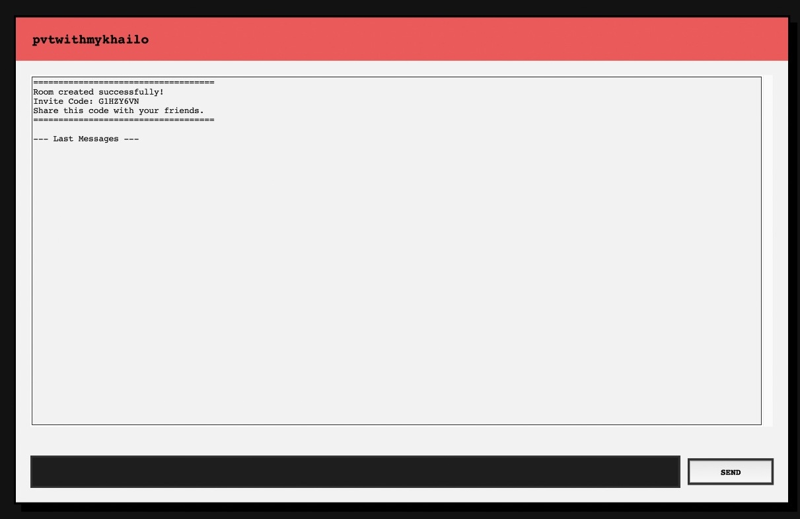

01
Donkey Chat
A multi-room chat application built as a university Computer Networks project. Supports registration, bcrypt-hashed authentication, real-time messaging over TCP sockets, and persistent chat history through a normalized SQLite schema managed with SQLAlchemy.

Donkey Chatproject preview